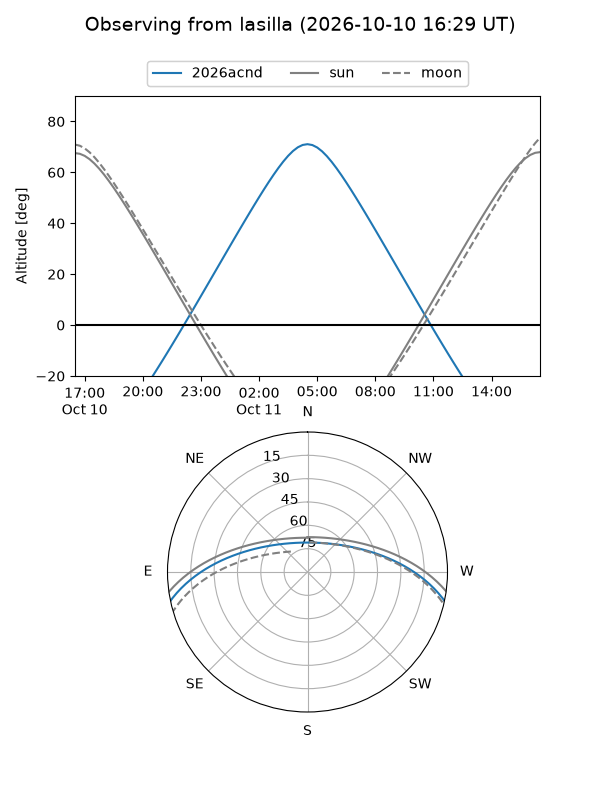
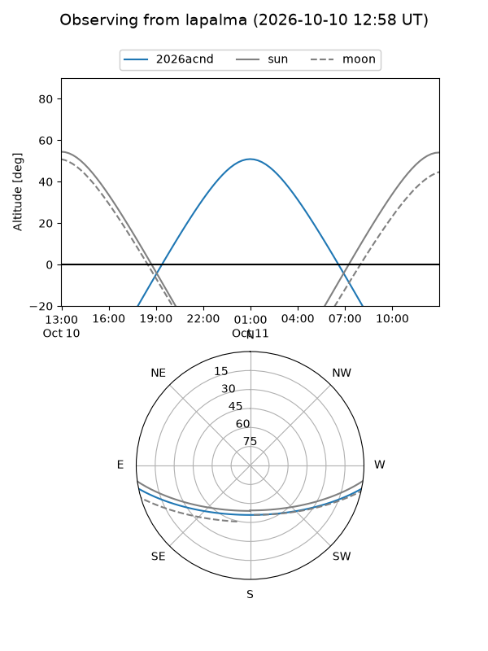
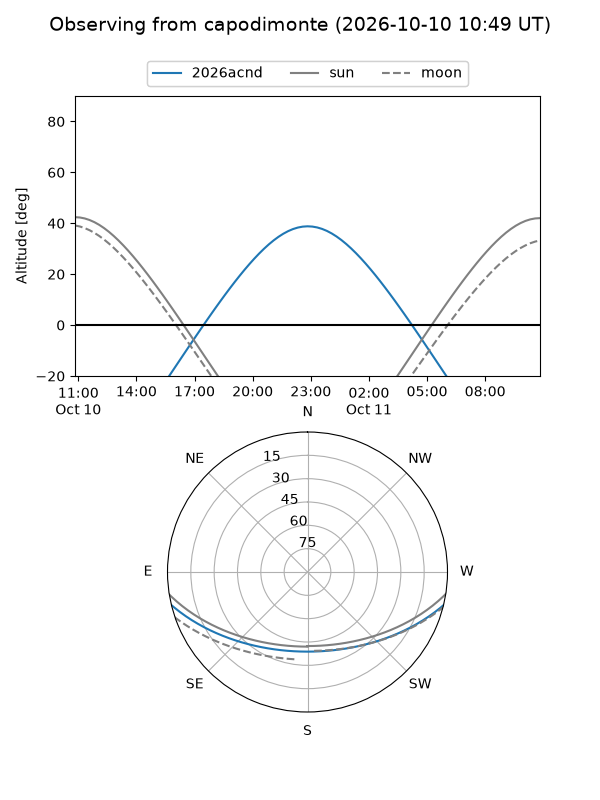
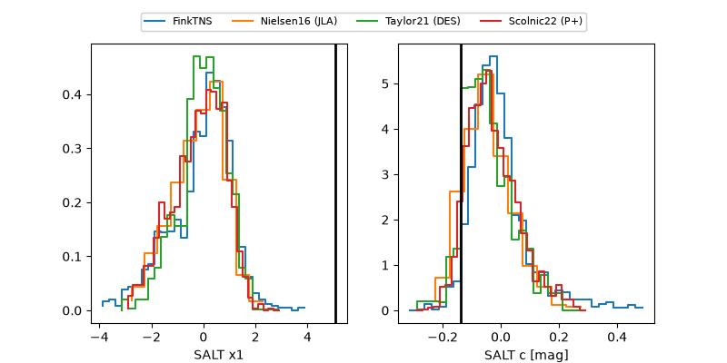

2026acnd
Target 2026acnd at 2026-10-10 15:46
Aliases and brokers:
FINK-ZTF: ztf.fink-portal.org/ZTF26abuogsf
Lasair-ZTF: lasair-ztf.lsst.ac.uk/objects/ZTF26abuogsf
ALeRCE-ZTF: alerce.online/object/ZTF26abuogsf
YSE-PZ: ziggy.ucolick.org/yse/transient_detail/2026acnd
TNS name: wis-tns.org/object/2026acnd
Direct TNS query: direct search
alt names
ZTF26abuogsf (ztf,fink_ztf)
2026acnd (tns,yse)
PS26ieo (panstarrs)
Coordinates:
equatorial (ra, dec) = 16.0955,-10.47667
equatorial (HMS+DMS) = 01:04:22.92,-10:28:36.02
galactic (l, b) = (133.9217,-73.07163)
Flags:
peak dt: +13.1
Photometry:
last ztfg=20.22, ztfr=20.13
7 ztfg, 4 ztfr detections
Lightcurve
Visibility



Additional plots
